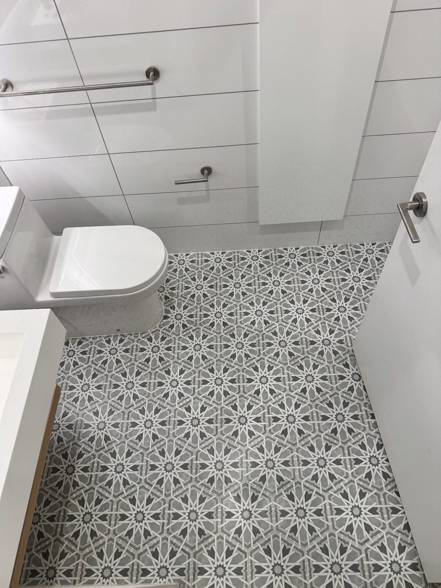
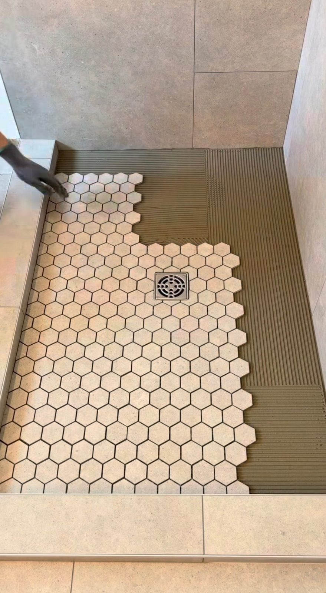
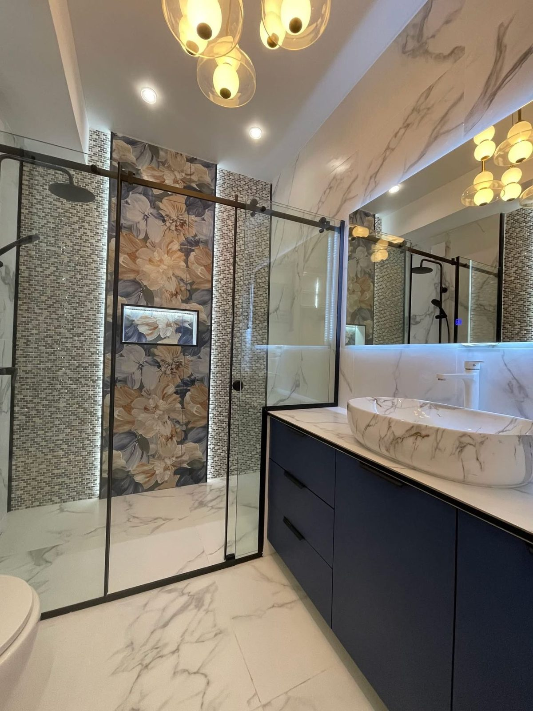
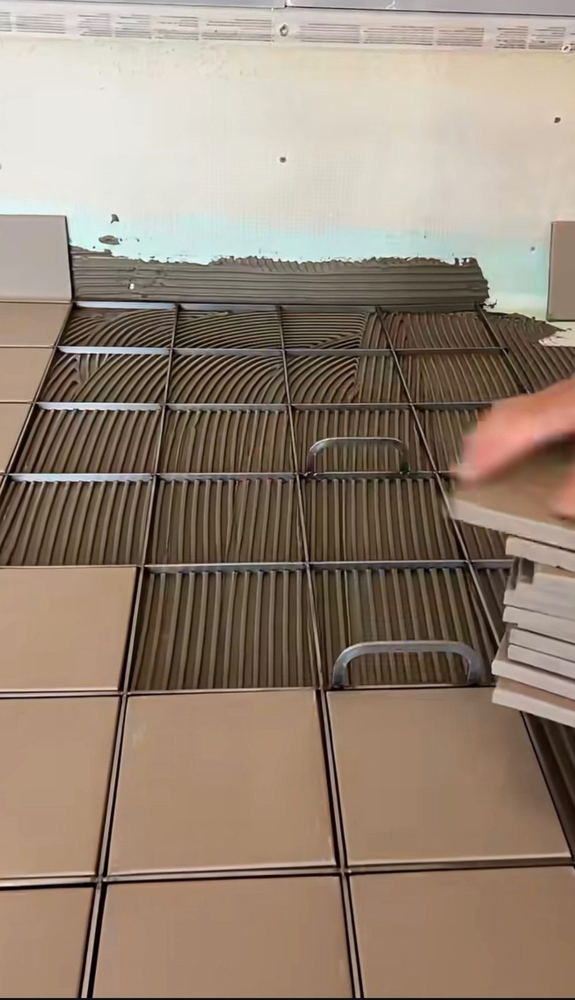
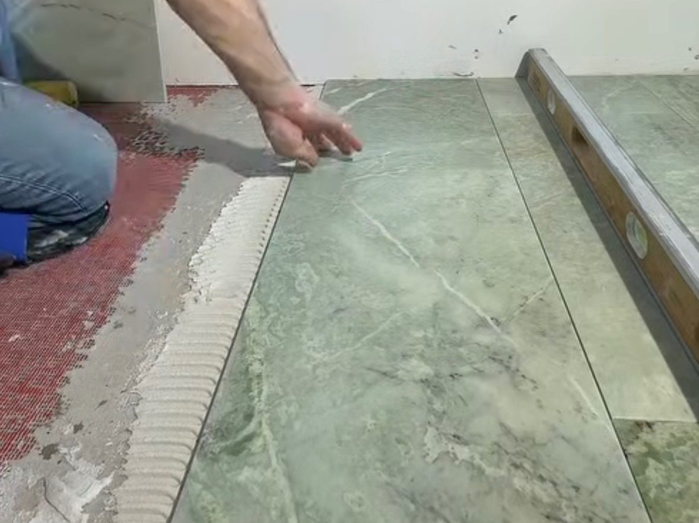

Every Grout Problem, Solved
From stained restaurant floors to cracked bathroom grout — we restore grout to like-new condition.

High-pressure steam and professional cleaning agents dissolve grease, food residue, mold, and years of buildup. Used by NYC restaurants and commercial kitchens.

Remove deteriorated grout and install fresh grout. Eliminates cracked, crumbling, and missing grout lines that cause water infiltration and look bad.

Professional grout colorant application restores faded, discolored grout to a uniform color. Looks like new grout without removing and replacing it.

Penetrating sealer applied after cleaning or regrouting. Protects against future staining, moisture absorption, and mold growth.

Repair cracked, missing, or damaged grout in specific areas. Matched to existing grout color for seamless repair.

Upgrade to commercial-grade epoxy grout — virtually stain-proof, chemical-resistant, and rated for heavy commercial use.